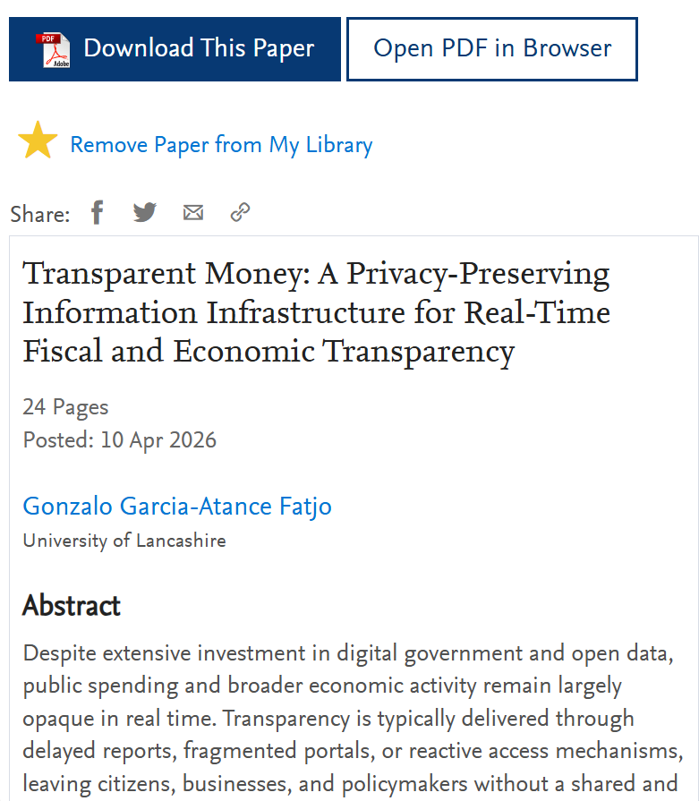
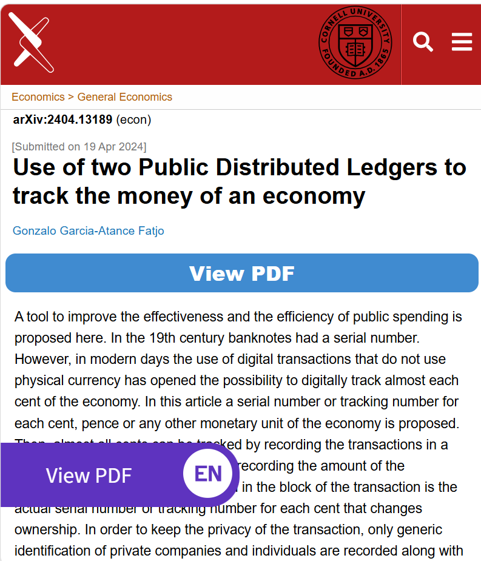

Lo que se toma de los ciudadanos no debería ocultarse a los ciudadanos.
Dinero Transparente
Una arquitectura para observar el dinero público sin vigilar al ciudadano.
Dinero Transparente es una propuesta para hacer visible el dinero público hasta el último céntimo de modo que los ciudadanos puedan ver adónde van los impuestos, cómo gastan los organismos públicos y cómo se mueve el dinero por la economía, sin publicar la identidad de ciudadanos ni empresas privadas.
Por qué el dinero público debería ser visible
Si los impuestos se toman de los ciudadanos, ¿por qué los ciudadanos no pueden ver adónde va ese dinero con la misma facilidad y claridad con la que consultan sus propias cuentas bancarias?
Imagina abrir el móvil y ver cuánto ha gastado hoy tu ayuntamiento, administración, hospital, escuela u organismo público: facturas de electricidad, consumo de agua, contratos de mantenimiento, subvenciones, pagos de contratación pública, salarios, proveedores, ayudas y transferencias.
Imagina poder comparar esa información de forma sencilla entre ayuntamientos, ciudades, regiones, hospitales, escuelas u organismos públicos. ¿Por qué un edificio gasta mucho más en energía que otro? ¿Por qué un ayuntamiento paga más por el mismo servicio? ¿Por qué se compra el mismo servicio una y otra vez?
Si existiera esta visibilidad, el espacio para la corrupción, el despilfarro, el favoritismo, los sobreprecios, la mala gestión y las ventajas de información privilegiada sería mucho menor. El dinero público debería ser visible, buscable, comparable y comprensible.
¿Qué es Dinero Transparente?
Dinero Transparente, conocido en inglés como Transparent Money, no es una nueva moneda, no es una moneda digital de banco central, o CBDC, y no es un sistema de pago. Es una propuesta de capa de información pública, estructurada y respetuosa con la privacidad, construida sobre el dinero y la infraestructura bancaria ya existentes.
Su idea central es que se puede seguir el dinero sin seguir a las personas. Si cada céntimo digital tiene un número de seguimiento, entonces el movimiento del dinero puede registrarse siguiendo el propio dinero, sin publicar los nombres del pagador y del receptor. El registro público no necesita esos nombres porque el propio dinero tiene identidad.
La idea central
Por qué importa
La información sobre el gasto público suele llegar tarde, estar fragmentada, ser técnica y resultar difícil de entender para el ciudadano corriente. Dinero Transparente busca transformar la transparencia fiscal: pasar de publicaciones ocasionales a visibilidad continua. Ciudadanos, periodistas, investigadores, empresas y responsables públicos podrían ver cómo se recauda, transfiere y gasta el dinero público en tiempo real. Además, al ofrecer información útil sobre la economía, no dependería solo del interés cívico: muchas personas lo usarían porque les resultaría útil para tomar mejores decisiones.
El beneficio más amplio es económico. Una visualización pública y respetuosa con la privacidad de los flujos de dinero podría mejorar la rendición de cuentas, reducir el despilfarro y la corrupción, debilitar las ventajas de la información privilegiada y ayudar a ciudadanos, empresas y administraciones a tomar mejores decisiones. Millones de pequeñas mejoras acumuladas año tras año durante décadas podrían funcionar como interés compuesto para la sociedad.
Campos relacionados
Dinero Transparente se relaciona con varios campos importantes: blockchain, transparencia fiscal, gobierno abierto, rendición de cuentas, dinero público, tecnología anticorrupción, democracia, dinero digital, registros públicos y sistemas de registro distribuido. También es relevante para los debates sobre monedas digitales de banco central, criptomonedas y el futuro de las finanzas públicas, aunque Dinero Transparente no es una criptomoneda, no es una CBDC y no es un nuevo sistema de pago.
El objetivo es usar la infraestructura digital moderna para hacer visible el gasto público en tiempo real mientras se protege la privacidad. En pocas palabras: Dinero Transparente permite seguir el dinero sin seguir a las personas.
Privacidad por arquitectura
Dinero Transparente busca revertir la tendencia creciente a vigilar cada vez más a los ciudadanos. Propone usar la tecnología en sentido contrario: no para observar la vida privada, sino para hacer visible al gobierno, que debe rendir cuentas ante los ciudadanos. Las identidades privadas no se publican en el registro público. Las transacciones privadas utilizan códigos genéricos y descripciones amplias, mientras que las transacciones públicas tienen mayor detalle porque implican dinero público.
Las protecciones adicionales pueden incluir dividir cantidades poco comunes en denominaciones frecuentes, reducir la precisión temporal y geográfica, generalizar las categorías privadas y usar mecanismos de reemisión a corto plazo para intercambiar números de seguimiento. Esto ayuda a detener la inferencia cuando un actor conoce por otras vías un patrón de transacción y podría intentar seguir el camino del dinero de otra persona o empresa.
Más información
Transparent Money: A Privacy-Preserving Information Infrastructure for Real-Time Fiscal and Economic Transparency
SSRN preprint by Gonzalo Garcia-Atance Fatjo.

Use of Two Public Distributed Ledgers to Track the Money of an Economy
arXiv preprint by Gonzalo Garcia-Atance Fatjo.

Autor
Dinero Transparente es un concepto de investigación y bien público desarrollado por Dr Gonzalo García-Atance Fatjó.
Esta web enlazará publicaciones, preprints, ponencias, vídeos y trabajos relacionados a medida que el proyecto avance.